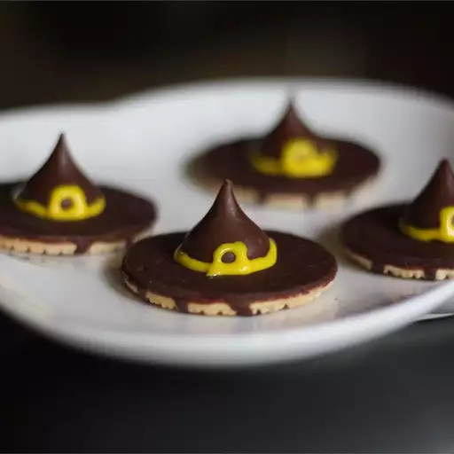

Witches' Hats
Witches' hats are cute and simple Halloween treats that everyone will love. The amount this recipe makes depends on how many cookies and chocolate kisses you have. It just depends on how many you want.

Ingredients
- 2 packages of fudge strip cookies
- 1/4 cup of honey
- 1 bag milk chocolate candy kisses, unwrapped
- 1 tube decorating gel
Directions
- Place a fudge stripe cookie with bottom side up onto a work surface. Smear a small dab (about 1/8 teaspoon) of honey onto the bottom of a chocolate kiss, and secure the candy piece to the center of the cookie, covering the hole.
- Use decorating gel to pipe a small bow onto the cookie at the base of the candy piece. Repeat with remaining ingredients.